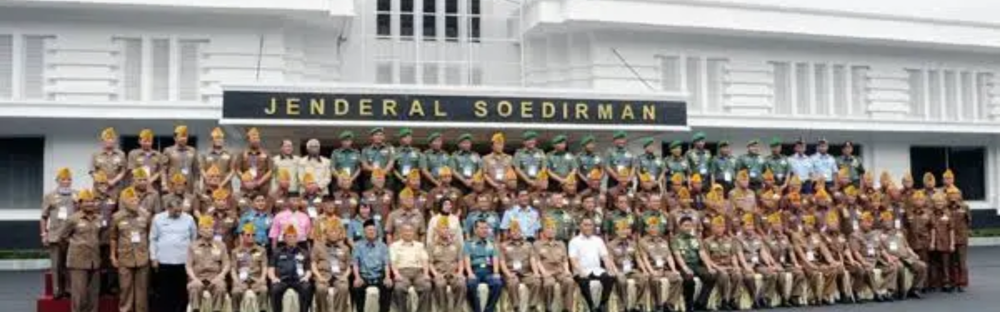
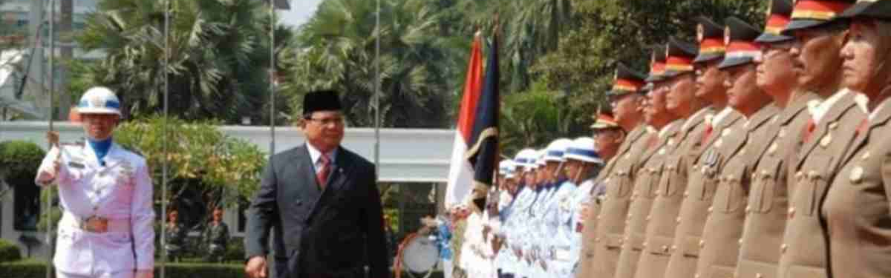
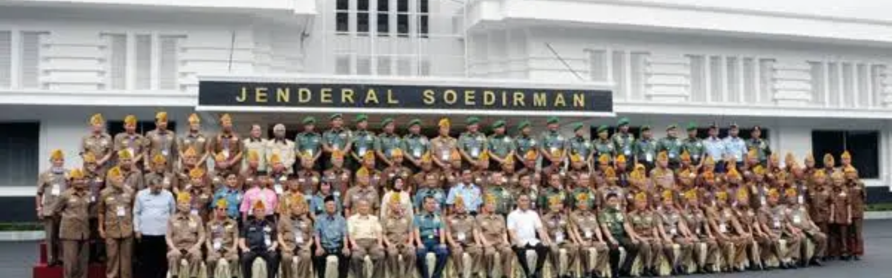
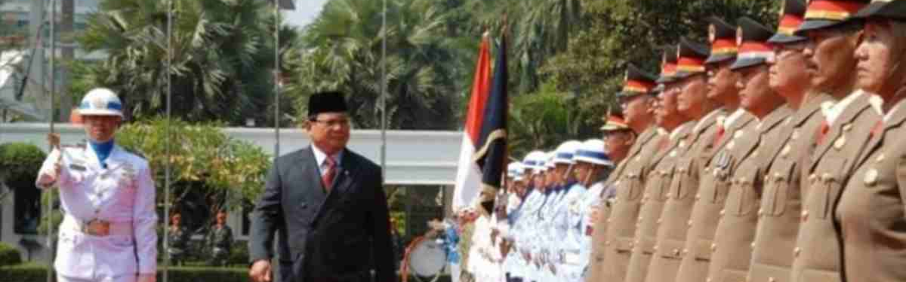
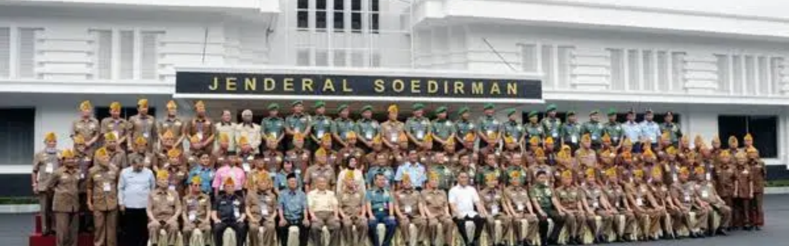
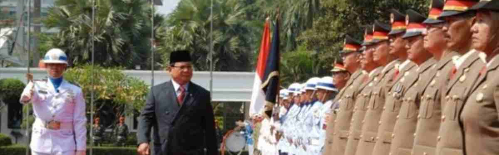
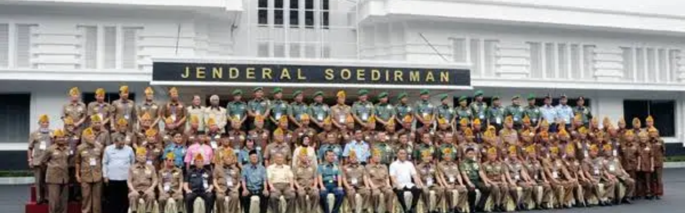
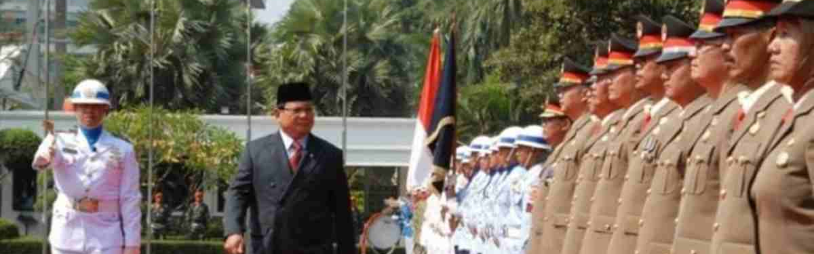

 




Setelah Proklamasi Kemerdekaan 17 Agustus 1945 roda pemerintahan segera bergerak, antara lain dengan pemindahan kekeuasaan yang di selenggarakan dalam tempo sesingkat-singkatnya. Oleh karena itu panitia Persiapan Kemerdekaan Indonesia PPKI, segera menyusun kabinet pertama yaitu tipe Presidensial dan hasilnya diumumkan pada 19 Agustus 1945. Kabinet ini memiliki 15 Kementerian serta 5 Kementerian Negara, namun salah satu jabatan Menteri Negara lalu di tiadakan karena menteri yang bersangkutan yaitu AA Maramis diangkat menjadi Menteri Keuangan. Pada kabinet pertama tersebut belum memiliki Menteri Pertahanan, dan fungsi Kementerian Pertahanan Negara ada di dalam Kementerian Keamanan Rakyat, yang dipimpin oleh Menteri Keamana Rakyat, yakni mantan Sodancho Suprijadi. Sebagaimana diketahui bahwa Suprijadi tidak pernah menduduki posisi sebagai Menhan dan selanjutnya posisi Menhan digantikan oleh Sulyadikusumo sebagai Menteri ad interim pada 20 Oktober 1945. Pada masa kabinet Sjahrir ke-1 yaitu periode 14 November 1945-12 Maret 1946 fungsi pertahanan negara juga masih berada di bawah wewenang Menteri Keamanan Rakyat, yang dijabat oleh Mr. Amir Sjarifuddin. Namun pada kabinet Sjahrir ke-2 periode 12 Maret – 2 Oktober 1946, dibentuk Kementerian Pertahanan yang dijabat oleh Mr. Amir Sjarifuddin. Di dalam kabinet ini fungsi pertahanan keamanan mulai ditekankan.